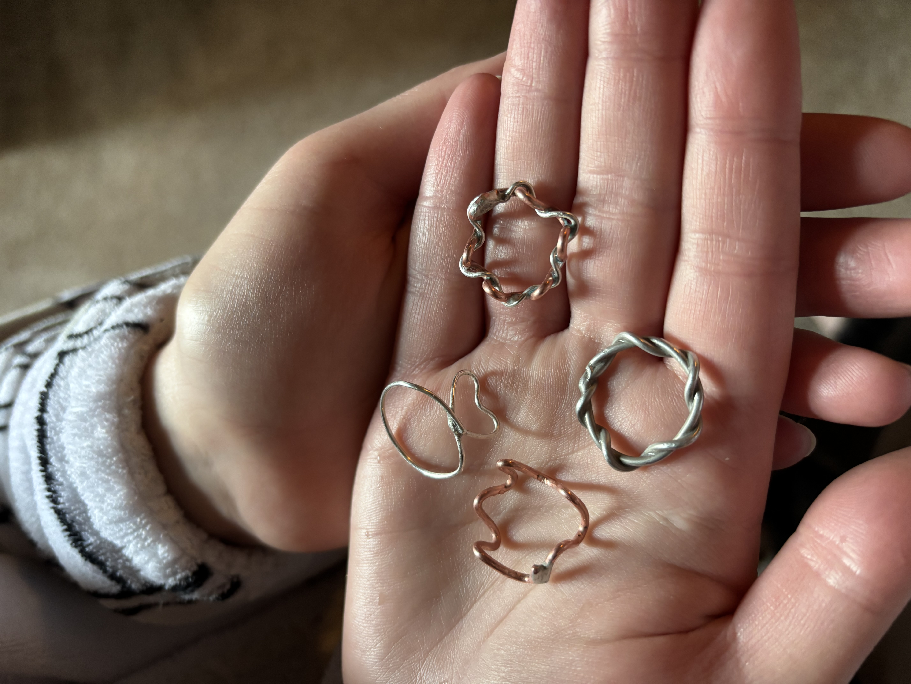
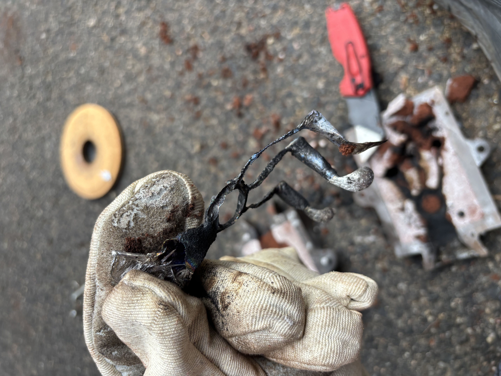
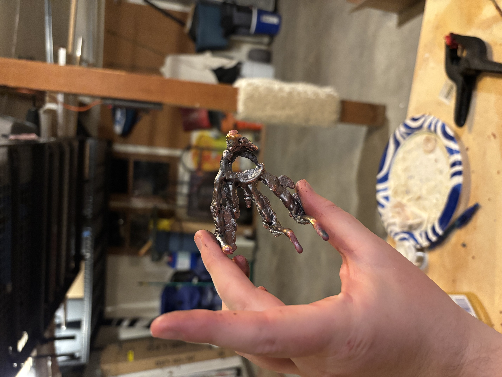
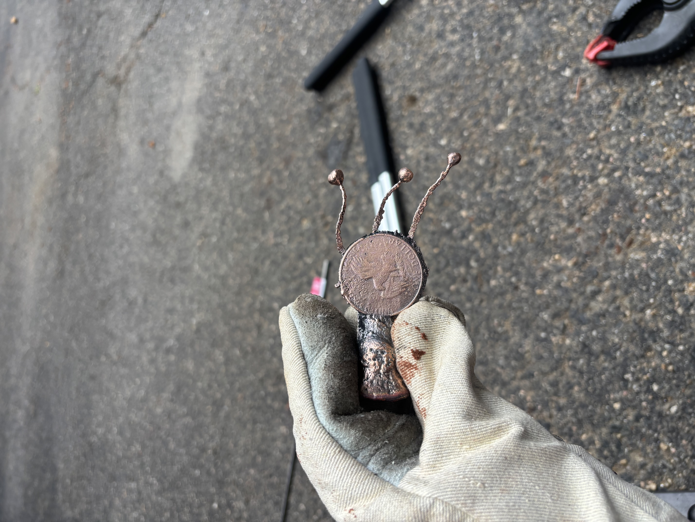
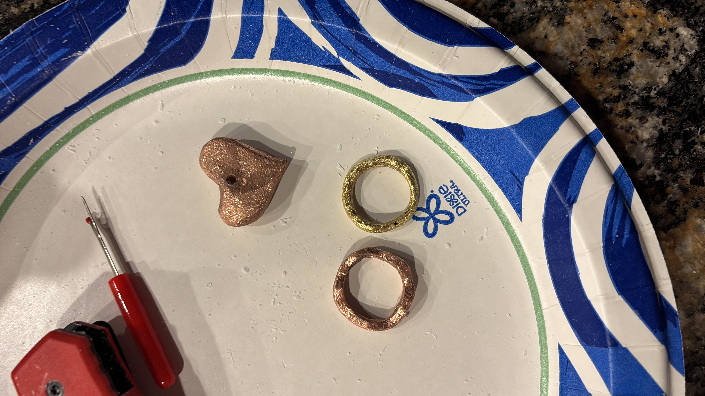

Colin Sauder
About Me Projects ResumeRings
The Begining
So, once upon a time I was at the local rock / hippie store with my girlfriend and she saw these cute little wire rings with different stones in them. These rings were made of like 20 gauge copper wire wrapped around itself with some quartz or rough amethyst in them and they were selling them for like $40. So I said something along the lines of "Pfffff I could make that." After about $200, several cuts and burns, and a call to poison control I have still not made them.
Because I sucked at soldering at the time I decided to make the first ring out of solder itself. I'm not sure how it worked since I would have had to melt the solder on the solder but I did it somehow.

Several months later and more soldering and other nick nack building experience and a brief silver obsession, my buddy and I wanted to play with an acetylene torch and we melted a silver plated spoon, from it I made a little moon charm.

I was also able to steal some silver wire to make a jump ring from the local jeweler, so shoutout John from morning star jewelers, super awesome guy.
After that initial adventure I decided to bight the bullet and buy a casting furnace on amazon so I could make stuff not just out of wire, but until that came here some more cool stuff I made out of wire.
Casting
I had bought a sand mold to cast previously with just a propane torch and a little crucible. However I could never get that hot enough to even cast with aluminum, it just wouldn't flow down into the mold. So when I got the furnace I got the crucible really hot, a little too hot.
 So hot that most of the metal just flowed straight out of the mold through the air holes. My molds also were not very good and collapsed as soon as I set them on the ground. So my next idea was just to use something easier to make a mold than a ring just to see if I can cast and how much detail the sand could capture. So I decided to try counterfeiting!
And that actually worked really really well. Look you can actually see the text on it!
At this point my copper scrap was running pretty low as most of it was jus t scrap wire from the van der graff generator. My cheap ass didn't want to just go and buy copper pipes from the home depot so me and a buddy went to a scrap yard in hopes of… I don't know a big pile of free copper I guess. Our best source however was old alternators which also would have been too expensive just for a bit of copper. So I started thinking of other cheaper metals I could melt and after some initial googling (turns out neodymium magnets are moistly iron, and pure neodymium is really expensive) I thought “hey, you know what's mostly copper and is essentially free, Brass!” (via bullet casings).


Now heres the fun part, I drilled out the fining pin of a bunch of the bullet casings and threw them into the crucible to melt them. I was getting some weird collared flames out of the furnace but hey thats probably the gunpowder or tarnish or whatever burning off right? The brass eventually melted and I poured it into the sand mold and then the excess into an ingot mold, and after I did I saw this weird green group on the crucible and ingot mold. I googled what this was and it turns out its oxidised zinc. How did the zinc get oxidized you may ask as I did. It turns out the zinc in the brass has a much lower melting point than the copper, so much lower that it will just evaporate out!
How fun.
I realized then I had been breathing in zinc fumes for the last 30 minutes. One really panicked call to poison control later and it turns out I was going to be fine. (I was smart enough to not do it inside, but not smart enough to look up the evaporation temperature of zinc apparently) I decided to just buy some copper after that and stick with it for the time being. At least until I can afford some silver.
I managed to figure out how to actually cast though and clean them up a bit (including the brass one!)
I also made one more wire one while writing all my adventures down, I actually bought a gem for this one too!